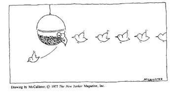

Problem H: Queuing at the doctors

Due to the increasing number of weird viruses spreading around, all
the members of the International Confederation of Revolver Enthusiasts
(ICORE) are required by their boss to do quarterly physical checkups
at General Hospital. All checkups are arranged by the boss and
scheduled on the same day. Each member of ICORE gets instructions
where they are given
- their number from the set {1 ... n}
- the time of the day when they are supposed to show up at General Hospital
- a list of doctors' offices that they are to visit in the listed order.
Doctors' offices in General Hospital are numbered with numbers from the set
{1 ... m}.
All the members of ICORE have been convinced that the schedule of the
checkups has been professionally prepared and that there would be no
lining up and waiting at the doctors' doors. However, since their
boss was a political appointment their hopes for not wasting time had
to be abandoned as soon as they started arriving at the hospital. The
queues were forming rapidly despite the fact that the doctors were
very efficient due to their usual sloppiness. The members of ICORE
are all very disciplined and obey the following rules for visiting the
doctors
- if an ICORE member was supposed to show up at the hospital at time
t, then at time t they show up at the first doctors' office
on their list;
- if several people show up a doctor's office at time t then
they form a queue in increasing order of their numbers and join the
end of the queue already formed by people who arrived earlier;
- if at time t in front of office x there is a queue of people
who arrived earlier or at time t, then the first person from the queue
enters office x. This person after a time unit (the doctors do a
sloppy job, remember) exits the office and at time t+1 appears at
the next office from their list of offices to visit. At that time the first
person from the queue enters office x;
- if a visit at office x at time t was for the given visitor
the last visit on their list, then at time t+1 this visitor leaves the
hospital.
Your task is to find the time when the last visitor leaves the hospital.
The first line of input contains a natural number c giving the
number of cases to handle. The following lines form the input for the
c cases, each in the format described below. The first line of
data for a case contains two natural numbers n and m,
1 ≤ n, m ≤ 1000,
giving the number of the visitors and the number of doctors' offices
for the case. Each of the following n lines contains a
sequence of natural numbers. Among these lines, line i (1
≤ i ≤ n) has the following format
t k g1 g2... gk
meaning that the ith visitor arrives at time t and has to visit
k offices in the order given by g1
g2 ... gk where each gj
is a number of doctor's office, 1 ≤ gj ≤ m.
We have that 0 ≤ t ≤ 1000000 and there is no more than 1000000
visits scheduled for a day at the hospital.
For each of the c input cases print one line giving the
time when the last visitor leaves the hospital.
Sample input
2
5 3
1 3 3 2 1
0 7 2 3 1 1 1 1 2
2 1 1
1 2 3 3
4 3 1 1 1
5 10
3 1 6
2 3 3 2 8
2 1 4
2 4 7 9 9 6
0 2 8 7
Output for sample input
12
6
Author: Adapted from VII AMPwPZ by P. Rudnicki